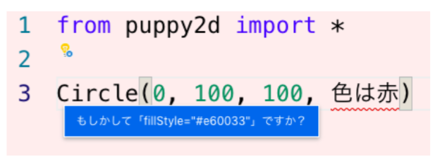
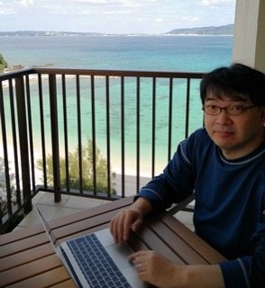

TOPICS/KEYWORD
プログラミングとAI
深層学習(AI)を活用したプログラミング
プログラミング教育
文書分類、翻訳 、要約、質問応答など。 ソフトウェア開発をできるようなAIを作っています。 AIの基礎を学びながら取り組みます。
教材開発
アルゴリズムからデータサイエンスまで 興味をもって取り組める教材開発を行っています。
TRON
学生時代は、坂村健教授の元でトロンOSの開発に取り組んでいたため、 基盤ソフトウェア開発、特に言語処理系に興味があります。
解析表現文法


MEMBER
Professor
倉光 君郎
Kimio Kuramitsu
東京大学工学部機械情報工学科
東京大学大学院理学系研究科情報科学専攻
博士（理学）指導教授 坂村健
略歴
2001年 東大大学院情報学環 助手2005年 横浜国立大学工学部電子情報工学科 講師
2006年 米ジョージア工科大学 客員研究員
2007年 横浜国立大学大学院物理情報工学専攻 准教授
2018年 日本女子大学理学部数物科学科 教授
研究プロジェクト（研究代表者）
経済産業省 IPA 未踏ソフトウェア創造事業総務省 SCOPE-R 組込み向けバーチャルマシン
文部科学省 JST/CREST 高信頼OSプロジェクト
Students
M2
Mari Taguchi
Momoka Obara
Shiho Takano
Teruno Kajiura
M1
Mai Takahashi
Miyu Sato
Nao Souma
B4
Akino Ymauchi
Ayari Hayakawa
Kyoko Koyanagi
Minami Matsushima
Sayaka Higashide
Waka Ito
Yui Noguchi
Yui Obara
Fellow
Yuka Akinobu
Alumnuies
ACHIEVEMENT
2023
- 梶浦 照乃, 相馬 菜生, 佐藤 美唯, 倉光 君郎. 多言語T5モデルへのPythonコードの追加学習. コンピュータソフトウェア. 40 ( 4 ) 1 - 12, 2023年10月.(査読あり)
- 倉光君郎, 小原 百々雅. ワークショップ：生成AI時代のプログラミング演習を考える. 夏のプログラミング・シンポジウム 2023, 2023年9月.
- 髙野 志歩, 佐藤 美唯, 倉光 君郎. LLMのコーディング能力を測る自動ベンチマークに向けて. 夏のプログラミング・シンポジウム 2023, 2023年9月.
- 梶浦 照乃, 髙野 志歩, 相馬 菜生, 平岡 達也, 倉光 君郎. ドメイン適応のためのSentencePieceにおける語彙追加. 情報処理学会第257回自然言語処理研究会, 2023年9月.
- 早川 彩莉, 高橋 舞衣, 東出 紗也夏, 梶浦 照乃, 倉光 君郎. Flan-T5に日本語を覚えさせる道のり. NLP若手の会 第18回シンポジウム(YANS2023), 2023年8月
- 伊東 和香, 佐藤 美唯, 梶浦 照乃, 髙野 志歩, 倉光 君郎. 論証モデルによる主張と根拠の可視化に向けて. NLP若手の会 第18回シンポジウム(YANS2023), 2023年8月
- 小柳 響子, 相馬 菜生, 松島 美波, 倉光 君郎. 軽量T5モデルの開発と性能評価. NLP若手の会 第18回シンポジウム(YANS2023), 2023年8月
- 山内 璃乃, 小原 百々雅, 小原 有以, 佐藤 美唯, 田口 真里, 髙野 志歩, 倉光 君郎. 異文化レシピ: 対話AIの正用法を学ぶ教材開発. NLP若手の会 第18回シンポジウム(YANS2023), 2023年8月
- 山内 璃乃, 小原 有以, 佐藤 美唯, 田口 真里, 倉光 君郎. 対話AIの適切な活用法を学ぶための問題解決型の実習教材の提案～異文化レシピを教材として～. 情報処理学会 情報教育シンポジウム(SSS2023), 2023年8月. (査読あり) ＜学生奨励賞＞
- 小原 有以, 佐藤 美唯, 倉光 君郎. KOGI: ChatGPTをColabに統合したプログラミング演習支援. 情報処理学会 情報教育シンポジウム(SSS2023), 2023年8月. (査読あり) ＜学生奨励賞＞
- 小原 百々雅, 髙野 志歩, 小柳 響子, 倉光 君郎. コーパス権利保護に配慮した分散型LLM学習システムに向けて. 情報処理学会xSIG2023, 2023年8月.
- 髙野 志歩, 佐藤 美唯, 倉光 君郎. 多言語コード翻訳に用いた大規模言語モデルのコード生成能力の自動評価に向けて. 情報処理学会xSIG2023, 2023年8月.
- 佐藤 美唯, 髙野 志歩, 伊東 和香, 倉光 君郎. 逆変換を活用した生成された文書の実行ベースの評価尺度. ソフトウェアエンジニアリングシンポジウム2023, 2023年8月.＜インタラクティブポスター賞＞
- 相馬 菜生, 高橋 舞衣, 梶浦 照乃, 倉光 君郎. 拡散モデルによるコード追加学習を加えた大規模言語モデル. ソフトウェアエンジニアリングシンポジウム2023, 2023年8月. （査読あり）
- 高橋 舞衣, 相馬 菜生, 佐藤 美唯, 小原 百々雅, 倉光 君郎. 大規模言語モデル T5 を用いたプログラミング初学者向けエラー対応 AI モデル. 情報処理学会 xSIG2022, 2023年8月. (査読あり) ＜Outstanding Effort Award＞
- 佐藤 美唯, 相馬 菜生, 伊東 和香, 小原 有以, 東出 紗也夏, 髙野 志歩, 倉光 君郎. ChatGPTはどのくらいプログラミングを理解しているか？ 2023年並列／分散／協調処理に関するサマー・ワークショップ (SWoPP2023). 情報処理学会 第145回プログラミング研究発表会, 2023年8月.
- 小原 百々雅、相馬 菜生、高橋 舞衣、倉光 君郎. エラー診断と修正を実現するプログラミング学習支援AIに向けて. 人工知能学会全国大会（第37回）, 2023年6月.
- 髙野 志歩, 相馬 菜生, 田村 みゆ, 梶浦 照乃, 倉光 君郎. SentencePieceの重複語入れ替えによる日本語T5への言語モデル追加. 言語処理学会第29回年次大会(NLP2023), 2023年3月.
- 高橋 舞衣, 小原 百々雅, 相馬 菜生, 倉光 君郎. 大規模言語モデルを応用したエラー診断モデルによる学習支援に向けて. 第15回データ工学と情報マネジメントに関するフォーラム(DEIM2023), 2023年3月.
- 滝澤 菜々子, 佐藤 美唯, 髙野 志歩, 小原 百々雅, 田村 みゆ, 倉光 君郎. キーストロークデータを用いたプログラミング経験判定AIモデルの構築. 第15回データ工学と情報マネジメントに関するフォーラム(DEIM2023), 2023年3月.
- 佐藤 美唯, 木村 江梨花, 小原 百々雅, 梶浦 照乃, 倉光 君郎. 文脈を考慮した自然言語からコードへの機械翻訳の実現に向けて 第15回データ工学と情報マネジメントに関するフォーラム(DEIM2023), 2023年3月.
- 相馬 菜生, 梶浦 照乃, 高橋 舞衣, 倉光 君郎. 大規模言語モデルへの追加事前学習による誤り訂正モデルのコードへの適用 第15回データ工学と情報マネジメントに関するフォーラム(DEIM2023), 2023年3月.
- 木村 江梨花, 佐藤 美唯, 小原 百々雅, 倉光 君郎. 対話システムへの愛着を高める談話コーパスの実現に向けて 第15回データ工学と情報マネジメントに関するフォーラム(DEIM2023), 2023年3月. ＜学生プレゼンテーション賞＞
2022
- Teruno Kajiura, Nao Souma, Miyu Sato, Mai Takahashi, Kimio Kuramitsu. An additional approach to pre-trained code model with multilingual natural languages. 29th Asia-Pacific Software Engineering Conference (APSEC2022), 2022.
- 梶浦 照乃, 佐藤 美唯, 相馬 菜生, 高橋 舞衣, 小原 百々雅, 倉光 君郎. 多言語事前学習済みモデルmT5へのPython言語モデルの追加学習. 情報処理学会 第141回プログラミング研究発表会 2022.
- 佐藤 美唯, 相馬 菜生, 高橋 舞衣, 梶浦 照乃, 小原 百々雅, 倉光 君郎. プログラミング学習支援AIの開発:Python入門とデータサイエンスにおける経験. 情報処理学会 第141回プログラミング研究発表会 2022.
- 小原 百々雅, 佐藤 美唯, 梶浦 照乃, 富岡 真由, 倉光 君郎. Transformerベースのコード生成モデルにおける自動テスト評価手法の提案. IPSJ/SIGSE Software Engineering Symposium (SES2022),2022.（査読あり）
- 富岡 真由, 髙野 志歩, 佐藤 美唯, 梶浦 照乃, 田村 みゆ, 倉光 君郎. 日本語からのコード生成AIモデルとプログラミング支援. IPSJ/SIGSE Software Engineering Symposium (SES2022), 2022. ＜インタラクティブ・ポスター賞＞
- 高橋 舞衣, 相馬 菜生, 佐藤 美唯, 梶浦 照乃, 小原 百々雅, 倉光 君郎. Pythonのエラー診断AIモデルの構築に向けて.IPSJ/SIGSE Software Engineering Symposium (SES2022),2022.
- 田村 みゆ, 沼澤 翠, 梶浦 照乃, 倉光 君郎, 七丈 直弘. 専門用語に基づいた文書分類モデルの説明可能性の向上に向けて. NLP若手の会 第17回シンポジウム(YANS2022),2022.
- 佐藤 美唯, 梶浦 照乃, 相馬 菜生, 高橋 舞衣, 田村 みゆ, 倉光 君郎. 追加事前学習による誤字脱字に強い言語モデルに向けて. NLP若手の会 第17回シンポジウム(YANS2022), 2022.
- Momoka Obara, Teruno Kajiura, Shiho Takano, Yuka Akinobu, Kimio Kuramitsu. A Preliminary Report on Novice Programming with Natural Language Translation. IFIP WCCE 2022: World Conference on Computers in Education, 20-24, Aug, 2022.（査読あり）
- Shiho Takano, Miyu Tamura, Teruno Kajiura, Yuka Sato, Nanako Takizawa, Yuka Akinobu, Kimio Kuramitsu. Using Machine Learning to Analyze Keystroke Dynamics for Programming Proficiency. IFIP WCCE 2022: World Conference on Computers in Education, 20-24, Aug, 2022.（査読あり）
- Momoka Obara, Nao Souma, Miyu Sato, Mai Takahashi, Teruno Kajiura, Mayu Tomioka, Yuka Akinobu, Kimio Kuramitsu. An AI-Based Chatbot for Programming Education on the Colaboratory. IFIP WCCE 2022: World Conference on Computers in Education, 20-24, Aug, 2022.（査読あり）
- 髙野 志歩, 富岡 真由, 倉光 君郎. 部分的な自然言語入力とコード生成モデルによるプログラミング支援. 2022年並列／分散／協調処理に関するサマー・ワークショップ (SWoPP2022). 情報処理学会 第140回プログラミング研究発表会 2022.
- 相馬 菜生, 梶浦 照乃, 小原 百々雅, 倉光 君郎. CoNaLaチャレンジ: 言語生成モデルT5によるコード生成. 2022年並列／分散／協調処理に関するサマー・ワークショップ (SWoPP2022). 情報処理学会 第140回プログラミング研究発表会 2022.
- 梶浦 照乃, 小原 百々雅, 秋信 有花, 倉光 君郎. 多言語T5への追加事前学習によるPython言語モデルの構築. 情報処理学会, xSIG 2022. (査読あり)
- Yuka Akinobu, Teruno Kajiura, Momoka Obara, Kimio Kuramitsu. NMT-Based Code Generation for Coding Assistance with Natural Language. Journal of Information Processing, Vol. 30, pp. 443-450, 2022.（査読あり）
- 富岡 真由, 小松 栞, 小原 百々雅, 梶浦 照乃, 秋信有花, 倉光君郎. 励ましながらプログラミング学習を支援する対話システム. 第14回データ工学と情報マネジメントに関するフォーラム(DEIM2022), 2022.
- 小原 百々雅, 梶浦 照乃, 秋信 有花, 倉光 君郎. リアルタイムコード翻訳によるプログラミング学習支援に向けて. 第14回データ工学と情報マネジメントに関するフォーラム(DEIM2022), 2022.
- Yuka Akinobu, Momoka Obara, Teruno Kajiura, Shiho Takano, Miyu Tamura, Mayu Tomioka, Kimio Kuramitsu. Is Neural Machine Translation Approach Accurate Enough for Coding Assistance. 第24回プログラミングおよびプログラミング言語ワークショップ（PPL 2022）,2022.
- 梶浦 照乃, 小原 百々雅, 秋信 有花, 倉光 君郎. 深層学習におけるPython言語モデルの追加事前学習について. 第24回プログラミングおよびプログラミング言語ワークショップ(PPL2022), 2022.
- 髙野 志歩, 小原 百々雅, 秋信 有花, 倉光 君郎. 部分的な日本語記述からコード候補を提示する統合開発環境に向けて. 第24回プログラミングおよびプログラミング言語ワークショップ（PPL 2022), 2022.
2021
- Teruno Kajiura, Momoka Obara, Shiori Komatsu, Shiho Takano, Miyu Tamura, Mayu Tomioka, Yuka Akinobu, and Kimio Kuramitsu. Can Neural Machine Translation Help Programming for Beginners? 第12回日韓3女子大学交流合同シンポジウム. 2021
- 秋信 有花，梶浦 照乃，小原 百々雅，倉光 君郎 自然言語を用いたコーディング支援の実現に向けたニューラル機械翻訳ベースのコード生成. 情報処理学会 第136回プログラミング研究発表会 2021. ＜CS領域研究奨励賞＞
- 小原 百々雅，秋信 有花，髙野 志歩，倉光 君郎. TransformerベースのNMTが統合されたプログラミング言語処理系. 情報処理学会 第136回プログラミング研究発表会 2021.
- Yuka Akinobu, Momoka Obara, Teruno Kajiura, Shiho Takano, Miyu Tamura, Mayu Tomioka, Kimio Kuramitsu. Is Neural Machine Translation Approach Accurate Enough for Coding Assistance? In Proc. of ACM Beyond Code No Code (BCNC), 2021.
- 髙野 志歩，田村 みゆ，富岡 真由，秋信 有花, 倉光 君郎. 擬似コードから考える自然言語を活かしたプログラミング言語. 情報処理学会情報教育シンポジウム2021 (SSS2021), 2021. (査読あり) ＜学生奨励賞＞
- 小原 百々雅, 梶浦 照乃, 田村 みゆ, 秋信 有花, 倉光 君郎. 学習意欲の予測モデル構築の経験に基づく学校教育における教育AIの利活用に向けた考察. 情報処理学会情報教育シンポジウム(SSS2021), 2021. (査読あり)
- 小原 百々雅, 秋信 有花, 倉光 君郎. Transformerに適したDataAugmentationツールの実現に向けて. NLP若手の会 第16回シンポジウム(YANS2021), 2021.
- 田村 みゆ, 秋信 有花, 髙野 志歩, 倉光 君郎. ソースコードとソースコード解説文のAlignmentの実現に向けて. NLP若手の会 第16回シンポジウム(YANS2021), 2021.
- 梶浦 照乃, 小松 栞, 秋信 有花, 倉光 君郎. Transformerを用いたテンプレートマッチング型による情報抽出. NLP若手の会 第16回シンポジウム(YANS2021), 2021.
- 富岡 真由, 秋信 有花, 髙野 志歩, 倉光 君郎. プログラミング初学者に寄り添う対話システム. NLP若手の会 第16回シンポジウム(YANS2021)
- 秋信 有花，小原百々雅，倉光君郎. Transformer による日本語とPythonコード間の機械翻訳. 情報処理学会プログラミング研究会(PRO134), 2021.
- 縫嶋 慧深，秋信 有花, 倉光君郎. Pythonと日本語変換: Trans-CompilerとTransformerの比較． 情報処理学会第62回プログラミング・シンポジウム, 2021.
2020
- Yuka Akinobu, Emi Nuijima and Kimio Kuramitsu. Generating Parallel Corpus of Python Code and Natural Language for Deep Learning. 18th Asian Symposium on Programming Languages and Systems (APLAS 2020),(査読あり,ポスター発表), 2020.
- 秋信 有花，倉光 君郎. Puppyによる60分プログラミング体験コースの実践． 情報処理学会情報教育シンポジウム2020 (SSS2020)，2020. (査読あり) ＜最優秀発表賞受賞＞
- 秋信 有花，倉光 君郎. 自然言語記述からの近似コード生成を用いた初学者プログラミング支援. 情報処理学会xSIGワークショップ2020, 2020. (査読あり) ＜Outstanding Undergraduate Student Award 受賞＞
- 秋信 有花，多田 拓，倉光 君郎: 自然言語処理を用いた初学者向けプログラミング支援．言語処理学会第26回年次大会 (NLP2020), ポスター発表, 2020.
- 若杉 祐依，秋信 有花，渡邉 遥輔，倉光 君郎: 解析表現文法によるCNL日本語文法の試作．言語処理学会第26回年次大会 (NLP2020), 2020.
- 秋信 有花，縫嶋 慧深，倉光 君郎: プログラミング言語とのギャップを埋めるための形式日本語の提案．NLP若手の会 第15回シンポジウム (YANS2020), 2020.
- 縫嶋 慧深，秋信 有花，倉光 君郎: 自然言語とPython間での双方向機械翻訳の実現に向けて．NLP若手の会第15回シンポジウム (YANS2020), 2020.
- 秋信 有花，縫嶋 慧深，田村 みゆ，倉光 君郎: 深層学習による自然言語処理技法をプログラミング言語に橋渡しする形式日本語．情報処理学会第131回プログラミング研究発表会 (PRO131), 2020.
- 田村 みゆ，杉内 ゆり乃，縫嶋 慧深，田口 真里，秋信 有花，倉光 君郎: オンライン演習下における自由記述感想文からの学習意欲の予測モデル．情報処理学会情報教育シンポジウム2020 (SSS2020)，2020. (査読あり) <デモ・ポスター賞受賞>
- 富岡 真由，秋信 有花，倉光 君郎: 学習ログとブロックチェーンによる多角的なプログラミング・スキルの証明書．情報処理学会情報教育シンポジウム2020 (SSS2020)，2020. (査読あり)
2019
- Tada Taku, Yuka Akinobu, Makoto Sakane, Kimio Kuramitsu. Puppy: an educational simplification of Python with Live Playground. In Proc. of the ACM SPLASH/LIVE2019. 2019. (査読あり), 2019.
- 秋信 有花，坂根 万琴，多田 拓, 倉光君郎. Puppy : ライブなコーディング入門環境. 情報処理学会情報教育シンポジウム2019 (SSS2019), ポスター発表, 2019. (査読あり) ＜ポスター・デモ発表賞受賞＞
- 坂根 万琴，多田 拓，秋信 有花，倉光 君郎: Puppy: 物理エンジンを統合した中高生向けPython入門環境．情報処理学会第126回プログラミング研究発表会 (PRO126), 2019.
- 渡邉 遥輔，秋信 有花，若杉 祐依，倉光 君郎: 解析表現文法を用いた日本語文法定義の試作．情報処理学会第126回プログラミング研究発表会 (PRO126), 2019.